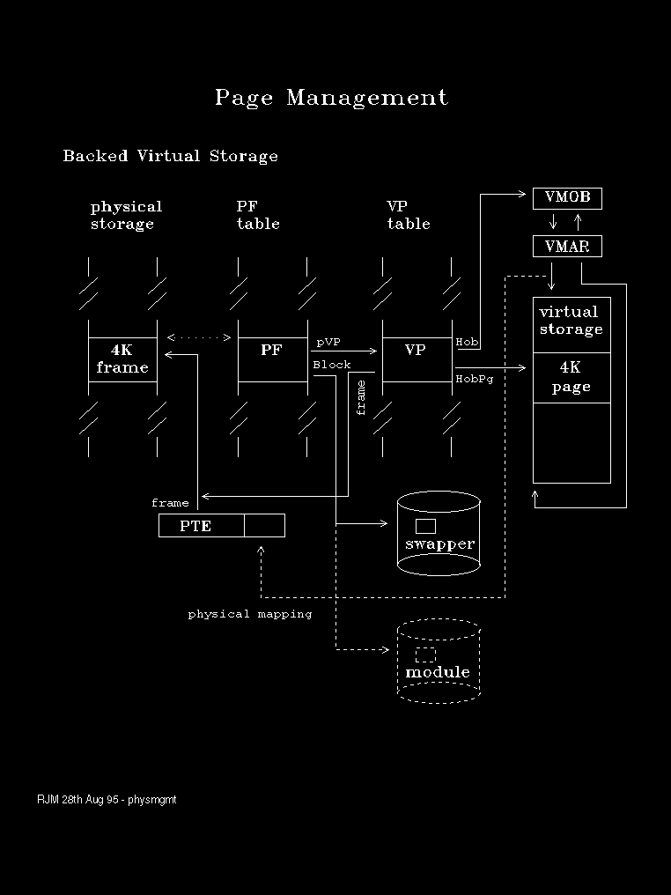
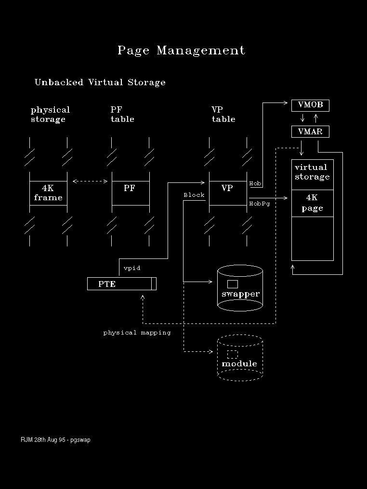

The relationship between PF structures, Page Table Entries, Swap File Blocks and Memory Objects is shown in the following diagrams.
The relationship between PF structures, VP structures, Page Table Entries, Swap File Blocks and Memory Objects is shown in the following two diagrams
The first of these depicts the situation where storage is backed or committed by physical memory.
The next diagram shows how this situation changes when storage is paged out.
Note that the Page Table Entry is used to record the swapper block number when the page is not present.